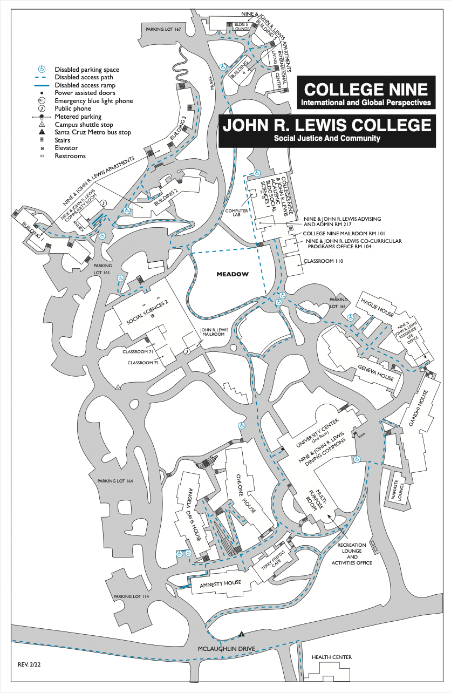

📊 Statistics
Overall Rating 58/100 (464/800)
Dining Hall 122/200
Library 126/200
Classes 112/200
Lounge 104/200

🤩 Student Testimonals
-
📌 I like the dining hall. I like that it feels like there are two separate halls to sit in. The S&E library kinda feels serious, but that helps sometime. The classes are also okay. And I prefer my dorm to study.
-
📌 The dining hall is pretty cool. Same for the study rooms. My classes are near S&E, so I go there a lot.
-
📌 I like the Oakes Cafe most, but the 9/10 dining hall is a close second. I’m actually from Oakes. I can’t speak to the classes in the 9/10, but they’re probably okay. And the study lounges are probably okay.
-
📌 I like the dining hall. McHenry is kinda far for me, so I rely on the study rooms a bit, but the WiFi can be a bit shoddy. I do like the classes. They’re pretty dapper. Do people still say that? Doesn’t matter. I’m bringing it back
-
📌 The libraries are kinda crowded for me. And same for the dining hall. The classrooms were nothing to praise, but they were, uh, decent. Praise to the study lounge, though.
-
📌 I think the study lounges are kinda basic, but I’m a bit guilty. I do go in there. The dining hall is amazing. The libraries have different vibes, so I guess it depends what you’re going for, but I like them. The classrooms are also pretty cool.
-
📌 Not the greatest dining hall, but easily the best out of the UCSC ones. The carpets are a bit worn out in the S&E library. The classes are okay. The study lounges can use more outlets. Other than that, it’s great.
-
📌 Oh, that’s simple. The dining hall has the most space, but not the best food. The libraries are hell holes. Sorry if that’s mean. I like that the study lounges are cool. And as for the classrooms, the chairs can be comfier, so it’d be cool to invest money in that, you know?
-
📌 Literally the best option for food on campus. What’s that? Yeah, that kinda did sound like Chris Traeger. The libraries get a bit crowded around midterms and finals, but still a nice place. The classes can be improved, as well. I do like that the study lounges stay the same amount of crowded.